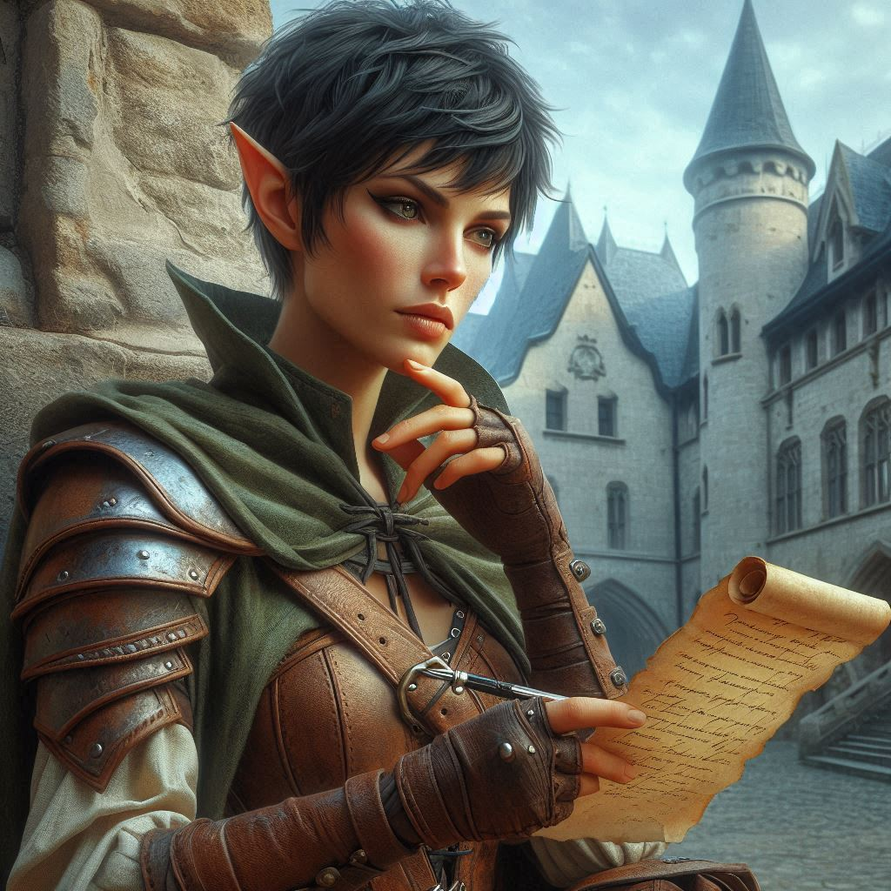

Step into the Shadows. Shape Your Destiny.

Play as Kira Coldspring, a half-elf ranger with a haunted past and a heart still mending. Raised in the windswept township of Belladonna by a stern half-orc blacksmith, Kira's life has been one of loss, resilience, and survival. But when the Magistrate summons her for one final mission—to hunt down her former lover turned fugitive sorcerer—everything changes.
Jorsh the Betrayer has vanished into the fabled Shadow Realm, carrying secrets that could unravel the kingdom. As Kira tracks him through forgotten ruins, treacherous forests, and courtly deception, she must confront not only the specters of her past but the dark magic threatening to consume the realm.
Will she uphold justice? Or follow her heart into the abyss?
In this rich, immersive Choose Your Own Adventure experience:
Navigate 118 unique chapters full of danger, discovery, and difficult choices
Explore multiple intertwining storylines with over 50 possible endings
Face moral dilemmas, forge alliances, uncover secrets—and live with the consequences

Choose between duty and desire, vengeance and redemption
Every decision you make carves a different path through a world steeped in mystery, magic, and political intrigue.
Forge your story. Face the Betrayer. Save—or doom—the realm.